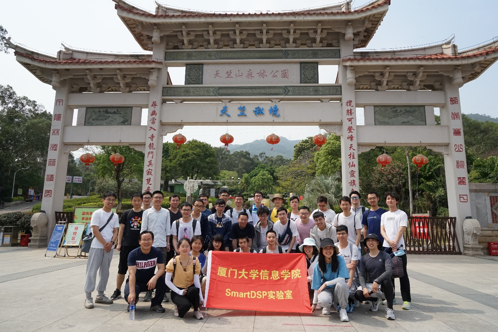
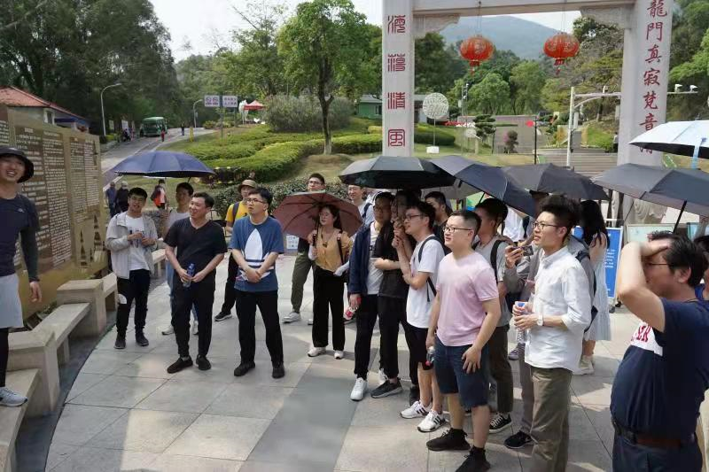
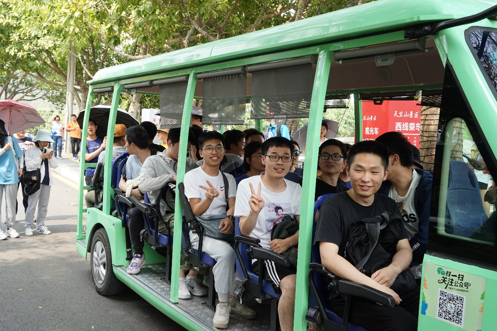
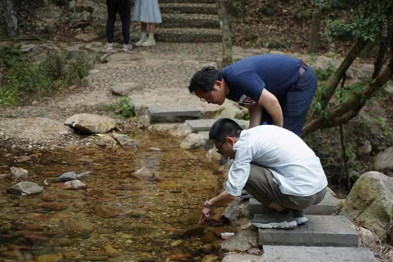
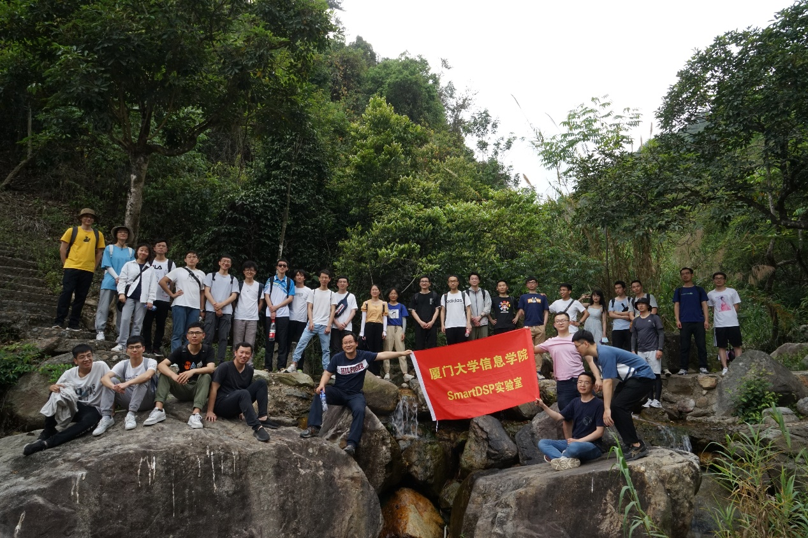
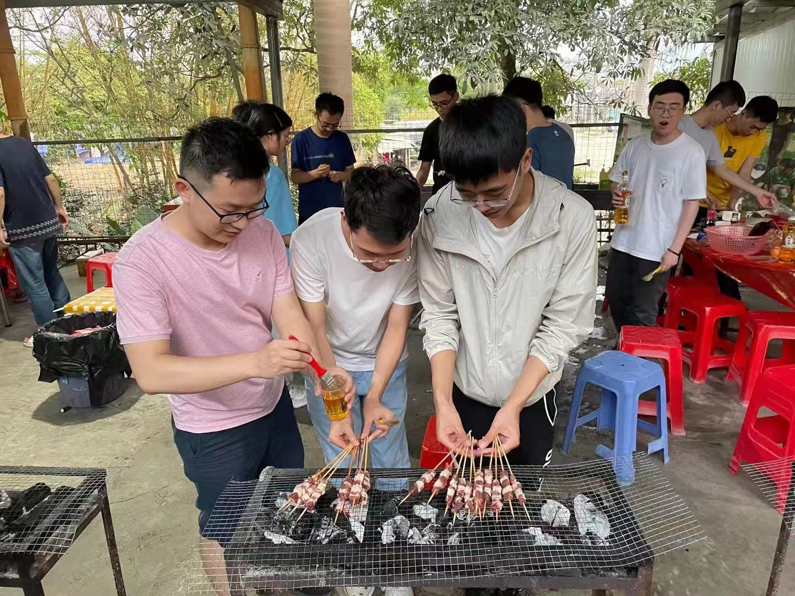
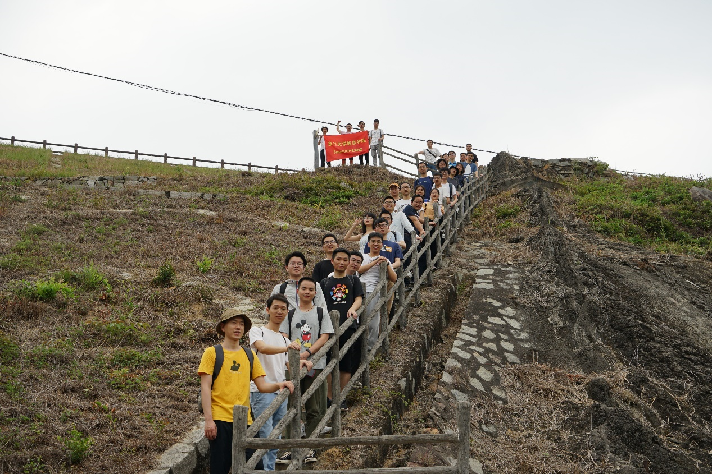

生活不止眼前的苟且，还有诗和远方。工作不仅仅局限于实验室到宿舍的两点一线，当然还有说走就走的团建活动。人间最美四月天，这样的季节，很适合踏青春游。为了增强实验室团队的凝聚力和向心力，丰富师生们的业余生活，在实验室学生会的带领下，组织了本次游玩厦门海沧天竺山的团建活动。
也许你是个短跑健将，但你不一定是个爬山勇者，SmartDSP实验室就是一个不怕苦、不怕累、勇攀高峰的团队。4月24日下午，小伙伴们在天竺山的农家乐集合，我们的丁老师和涂老师也一起加入了这次活动，在天竺山的东门我们留下了实验室团建的第一张照片。

紧接着马博作为我们的热心导游，详细的为大家讲解了不同爬山线路的情况，在马导的详细讲解下，大家竟然一致的选择了路途较远的西部路线，不得不说实验室的小伙伴都是敢于挑战自我的人，就连三位要去东路的小伙伴在丁老师的劝说下也倒戈了，所以大家整整齐齐的选择爬西边路线。

接下来各位小伙伴们就急不可耐的出发了，要出发的小伙伴们脸上笑容洋溢，这可是在实验室不多见的笑容。这里非常感谢实验室公费让大家乘坐观光车，一路上车上的小伙伴不仅欣赏了自然风光还欣赏了人文风景，可谓心情美了，这一切看起来都是美好的。

从四季花谷开始，大家开始用脚丈量天竺山，置身于山水之间，山林溪水涧也留下了SmartDSP人的笑声和脚印，大家跨越溪水穿越丛林，一路畅谈，或是聊生活的一地鸡毛和快乐时刻，或是聊科研的止步不前和内心的踌躇满志，置身于大自然中，这一切似乎得以释怀，变得云淡风轻。同行的丁老师也是不甘落后，一路紧跟年轻人，置身山水间嬉闹的人群中，老师们似乎找到了年轻的感觉，师生间的距离也似乎缩小了很多。

团队的每一个人都成功的到达大峡谷，没有人停下或者放弃，一路上大家沉醉于自然界中的山山水水，与身边实验室的小伙伴们相谈甚欢，也在大峡谷深处留下了SmartDSP的旗帜。

很多朋友喜欢吃烧烤，也参加过户外烧烤，却未曾体验过纯粹的DIY烧烤。DIY烧烤，用一句话总结，“自己烤的就是好吃!”，这其中的参与性、体验感，往往令人乐在其中、记忆深刻。

快乐的时光总是短暂的，为期半天的天竺山春游团建活动在欢声笑语中圆满结束。回想这一路的点点滴滴，有步履蹒跚的大峡谷，也有幽深宁静的山涧；有陡峭难攀的台阶，也有甜美可口的冰淇淋；有一窍不通的烧烤架，也有回味无穷的美食。一个人可以走得很快，但是一群人才能够走得更远，通过本次的团建活动，不仅仅拉近了实验室兄弟姐妹之间的情谊，更是让大家进一步融入到SmartDSP这个大家庭中来。希望通过本次团建，大家在SmartDSP这个大集体中心中充满爱，脸上挂着笑，对科研干劲满满！
